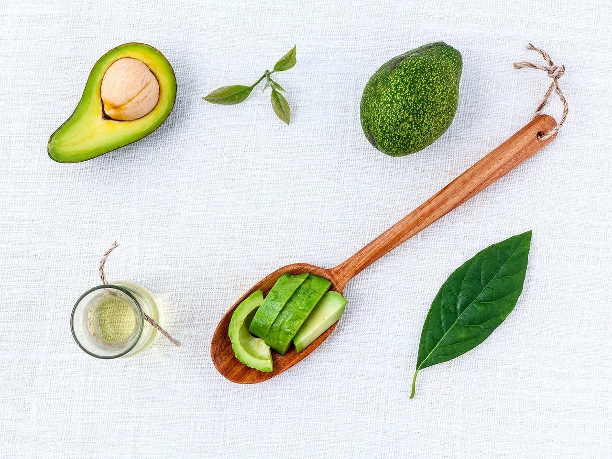

×
×
picture
Massage & Avslappning

×
Med 19 års erfarenhet av behandlingar av skador, värk o smärta.
Erfarenhet av träning,
övningar och vidareutbildningar så har jag en stor bredd för att kunna hjälpa dig att bli bättre i din kropp.
Jag jobbar alltid utifrån ett helhetsperspektiv för att du ska få bästa resultat.
Utifrån dina önskemål och behov kan du boka
Avslappningamassage eller
Djupgående behandlande massage ( idrottsmassage) för dig med besvär.
Många kunder benämner massagen som
skön-ont. Även djup massage ger dig avslappning.
Jag korrigerar benlängsskillnad med mjuk metod utan att knäcka.
Som Näringsterapeut kan jag även rekommendera dig tillskott för att förbättra förutsättningarna i din kropp.
Vanliga brister är mineraler och B- vitaminer. Hos mig får du alltid en specifik rekommendation vad som gäller för
just dig.
Som träningsinstruktör med egen erfarenhet av träning på hög nivå. Och genom erfarenheten att samarbeta med
sjukgymnaster så kan du få tips och
råd på övningar som komplement till din massage.
Då jag endast tar ett mindre antal massagekunder / vecka så är mitt engagemang stort.
Se fler behandlingar längre ned.